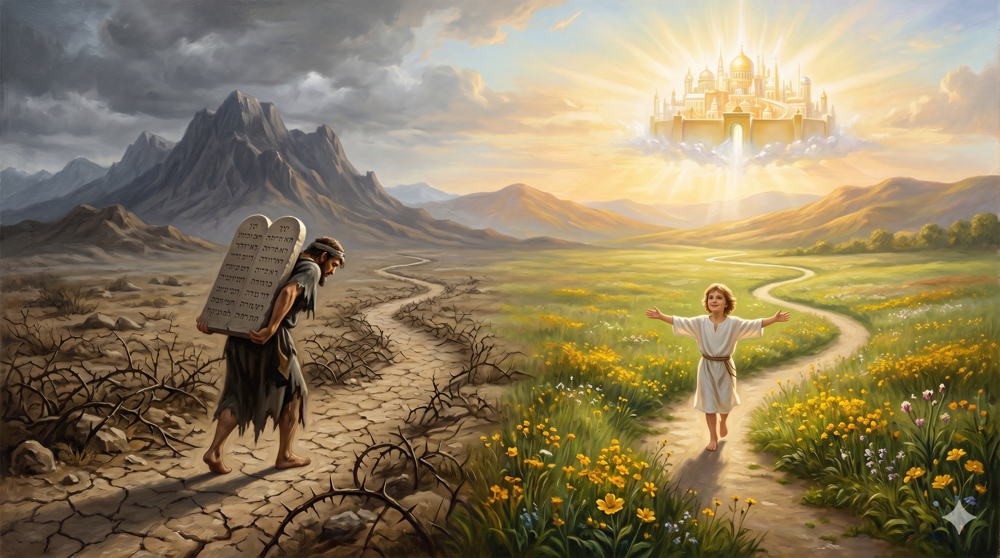

이른 새벽 막벨라 곁의 들판, 한 어린아이 이삭이 사라의 무릎 위에 누워 평화롭게 잠들어 있다. 그의 작은 가슴 위로 하늘에서 내려온 한 줄기 빛이 부드럽게 떨어지고, 그 빛 아래 "약속의 자녀"라는 보이지 않는 이름이 그의 이마에 새겨진다. 멀리 동쪽 지평선에서는 사천 년 후에 태어날 한 아기의 별이 함께 빛난다 — 약속으로 태어나, 약속을 따라 살아갈 모든 자녀들의 첫 새벽.
형제들아 너희는 이삭과 같이 약속의 자녀라 그러나 그 때에 육체를 따라 난 자가 성령을 따라 난 자를 박해한 것 같이 이제도 그러하도다 그러나 성경이 무엇을 말하느냐 여종과 그 아들을 내쫓으라 여종의 아들이 자유 있는 여자의 아들과 더불어 유업을 얻지 못하리라 하였느니라 그런즉 형제들아 우리는 여종의 자녀가 아니요 자유 있는 여자의 자녀니라 — 갈라디아서 4:28–31
바울은 갈라디아서 4장에서 한 가족의 이야기를 신학의 정수로 끌어올립니다. 아브라함의 두 아들 — 이스마엘과 이삭 — 두 사람은 같은 아버지에게서 났지만, 태어난 방식이 전혀 달랐습니다. 이스마엘은 인간의 노력과 조급함이 만든 아들이었고, 이삭은 하나님의 약속과 능력이 만든 아들이었습니다. 한 사람은 "육체를 따라" 났고, 또 한 사람은 "약속을 따라" 났습니다(갈 4:23). 그리고 바울은 이 두 사람을 단순한 가족사의 인물이 아니라 "비유"로 읽습니다(갈 4:24). 이스마엘의 길은 시내 산에서 율법으로 무거워진 종의 길을 상징하고, 이삭의 길은 위에 있는 예루살렘에서 약속으로 자유로워진 자녀의 길을 상징합니다. 그러므로 우리가 "이삭과 같다"는 말은 단순히 그 인물의 성품이나 행적을 닮자는 권면이 아니라, 우리의 출생의 방식 자체가 이삭과 같다는 신분의 선언입니다. 우리는 우리의 노력으로 하나님의 자녀가 된 것이 아니라, 그분의 약속이 우리 안에 임하셨기에 자녀가 된 사람들입니다.
바울이 로마서 9:8에서 한 번 더 못 박는 말은 더욱 단호합니다. "곧 육신의 자녀가 하나님의 자녀가 아니요, 오직 약속의 자녀가 씨로 여기심을 받느니라." 이것은 우리의 가장 깊은 정체성에 관한 한 마디입니다. 하나님의 가족이 되는 길은 혈통도 아니고, 노력도 아니고, 자격도 아닙니다. 그것은 오직 한 분의 약속이 한 사람의 인생 안에 떨어져 거기서 새 생명이 자라나는 길입니다. 그러므로 사라가 90세에 이삭을 품에 안았던 그 웃음 속에는, 사천 년 후 우리가 처음 그리스도를 영접하는 그 새벽의 웃음이 이미 함께 들어 있었습니다. 사라의 늙은 자궁이 아니라 하나님의 약속이 이삭을 만들었듯, 우리의 의지나 결단이 아니라 그분의 부르심이 우리를 만들었습니다. 이 사실은 우리에게 평생의 안전을 줍니다 — 우리는 우리의 손으로 만든 신앙이 아니라, 약속의 자녀이기 때문입니다. 우리를 만든 분이 우리를 끝까지 지키실 것입니다.

두 갈래의 길이 한 들판에서 갈라진다. 한 길은 무거운 짐을 진 종이 가시밭을 헤치며 걸어가고, 또 한 길은 자유로운 한 아이가 푸른 들판 위로 가벼운 발걸음을 옮긴다. 두 길 위로 다른 빛이 비치고, 한 길 끝에는 율법의 산이, 다른 길 끝에는 위에 있는 예루살렘의 황금 도성이 빛난다.
우리는 종종 우리의 신앙을 "내가 만들어 가는 어떤 것"으로 생각합니다. 그래서 어느 날 자신의 의지가 흐릿해지면 신앙도 흐려진 것 같이 느끼고, 자신의 결심이 약해지면 하나님과의 관계도 약해진 것 같이 느낍니다. 그러나 갈라디아서는 우리의 정체를 다른 각도에서 다시 정의해 줍니다 — 당신은 신앙을 만든 사람이 아니라, 약속이 당신 안에 만든 사람입니다. 사라의 늙은 몸이 이삭을 만들지 못했던 것처럼, 당신의 노력이 당신을 하나님의 자녀로 만든 것이 아닙니다. 당신은 한 분의 약속이 한 영혼 안에 임할 때 비로소 잉태된 사람입니다. 그러므로 오늘 당신의 신앙이 약해 보일 때마다 자신의 손을 보지 마십시오. 당신을 잉태시킨 그 약속의 입술을 보십시오. 당신이 시작한 것이 아니므로, 당신이 끝낼 것도 아닙니다. 약속을 주신 분이 그 약속을 완성하실 것입니다.
또 하나 — 약속의 자녀에게는 자유가 따라옵니다. "그런즉 형제들아 우리는 여종의 자녀가 아니요 자유 있는 여자의 자녀니라"(갈 4:31). 우리는 더 이상 두려움으로 신앙생활하는 종의 자녀가 아닙니다. 자격을 증명하기 위해 신앙생활하는 종의 자녀도 아닙니다. 우리는 이미 자녀로 태어났기에, 그 신분 안에서 자유롭게 살아가는 사람들입니다. 그러므로 오늘 당신의 예배는 자격을 따기 위한 노동이 아니라, 자녀로서 누리는 식탁의 시간입니다. 오늘 당신의 순종은 점수를 얻기 위한 일이 아니라, 사랑하는 아버지를 향한 자유로운 응답입니다. 이삭이 아브라함의 천막 안에서 누렸던 그 평화로운 일상 — 그것이 약속의 자녀가 누리는 거룩한 자유의 모습입니다. 당신도 오늘 그 천막 안의 한 자리에 앉아 있는 사람입니다.
당신은 신앙을 만든 사람이 아닙니다 — 약속이 당신 안에 만든 사람입니다.
이삭이 사라의 노력으로 태어나지 않았듯, 당신도 당신의 힘으로 태어나지 않았습니다.
오늘, 자녀의 식탁 앞에 자유롭게 앉으십시오. 당신은 약속의 자녀입니다.